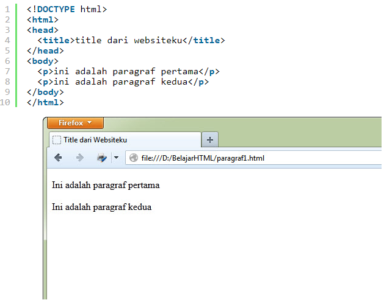

Belajar HTML : Membuat paragraf
HTML menyediakan tag khusus untuk membuat paragraf. Penulisannya menggunakan huruf p, sebagai berikut : < p >. Mari kita coba tagnya.
kita akan melihat bahwa kedua paragraf itu sudah berada pada posisi masing-masing. Setiap tag paragraf, web browser akan memberikan spasi antar paragraf.